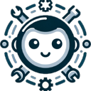
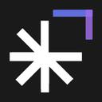
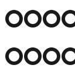
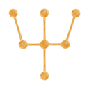
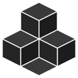
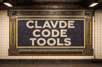
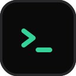
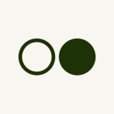
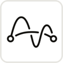
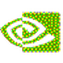

Best AI agents for coding in the terminal (2026)
Agents that live in your terminal: give them a task and they read files, run commands and propose changes. We list 283 tools for coding in the terminal below, each with a link-checked page, pricing as the maker states it and alternatives.
Updated
283 tools: 236 open source, 4 source-available, 20 free or freemium, 10 paid, usage-based or enterprise, 13 pricing on the maker's site.
MCP servers (69)
HiThink Finance (Tonghuashun Financial Data)
HiThink Finance is the official Tonghuashun (10jqka) financial data service for China's A-share market, aimed at AI agents and quant research: one API key gives real-time and historical quotes, call auctions, financial statements, valuations, indices, sectors, funds and IPO data through a REST API, a hosted MCP server, a CLI with built-in agent skills, a Python SDK or a local DuckDB store. The client code is MIT-licensed; the data needs an API key.
Added
Defang
CLI and MCP server for building and deploying Docker Compose-compatible projects to your own AWS, GCP, or DigitalOcean account.
Added
Codanna
Codanna is an MCP server that gives agents a way to handle local code intelligence MCP server and CLI for AI coding agents.
Added
Asm
Asm is an MCP server that gives agents a way to handle package registry and command-line tool for assembly projects.
Added
Roam Code
Roam Code is an MCP server that gives agents a way to handle local codebase intelligence CLI + MCP server for AI coding agents: SQLite.
Added
Mcptoon
Mcptoon is an MCP server that gives agents a way to handle MCP tools + agent skills in one zero-dependency CLI: 71,929 -> 581.
Added
Cli
Cli is an MCP server that lets agents use Alibaba Cloud Model Studio models and search.
Added
Hookdeck Cli
Hookdeck Cli is an MCP server that gives agents a way to handle hookdeck: forward webhooks to localhost (ngrok alternative), manage and query Event Gateway.
Added
Tinystruct
Tinystruct is an MCP server that gives agents a way to handle lightweight, modular Java application framework for web and CLI development, designed.
Added
Kmsg
Kmsg is an open-source agent project that helps builders handle unofficial KakaoTalk CLI and native MCP server for macOS — read, watch.
Added
Browsentic
Browsentic is an MCP server that gives agents a way to handle agentic browser harness: your agent CLI in your real, signed-in browser.
Added
Uni CLI
Uni CLI is an MCP server that gives agents a way to handle one command for every interface—search, run, and inspect real software across APIs.
Added
Remote Desktop Commander
Remote Desktop Commander is an MCP server that gives agents a way to handle use files, terminal and processes on your own computers from any AI.
Added
Mcp Apache Spark History Server
Mcp Apache Spark History Server is an MCP server that gives agents a way to handle and CLI for Apache Spark History Server.
Added
Agent Guild
Agent Guild is an MCP server that gives agents a way to handle see and steer Claude Code, Codex, Antigravity, Grok, Docker Agent and shell.
Added
Octri CLI
Octri CLI is an MCP server that gives agents a way to handle push OpenAPI specs, build SDKs in ten languages, publish API docs.
Added
Agentic Terminal Directory
Agentic Terminal Directory is an MCP server that gives agents a way to handle verified merchants accepting agentic payments on Lightning/L402/BOLT12/USDT — search, verify, pay.
Added
Claude Code Templates
Claude Code Templates is an open catalog and CLI of more than 1,980 Claude Code components (skills, subagents, slash commands, hooks, MCP servers and settings) at aitmpl.com, where you preview each file and combine components into one npx install that merges with your existing configuration.
Added
MEX
MEX gives engineers and their coding agents shared project memory stored as Markdown in a .mex folder that travels with Git, with a local hub for people, CLI and skills for Claude Code and Codex, an MCP server and checked statechart explanations.
Added
REA
MCP server and CLI that lets coding agents reverse engineer native binaries, Electron and JavaScript apps, .NET assemblies and live websites, using Ghidra, Hopper or IDA under the hood.
Added
MarkItDown
MarkItDown is Microsoft's MIT-licensed Python tool that converts PDFs, Word, PowerPoint and Excel files, images, audio, HTML, CSV, JSON, ZIP archives and more into clean Markdown that LLMs and agents can read, keeping headings, lists, tables and links. You can call it from the command line or Python, add optional plugins such as Azure Document Intelligence for harder documents, and expose it to Claude Desktop and other agents through the companion markitdown-mcp server.
Added
CC Switch
Desktop manager for Claude Code, Codex, Gemini CLI, OpenCode, OpenClaw and other coding agents that switches API providers in one click and manages MCP servers, skills and prompts.
Added
Scrapling
Scrapling is a BSD-3-licensed Python web-scraping framework that covers everything from a single request to a full crawl: fast HTTP fetchers, stealth browsers that can render JavaScript and interact with pages, parsing that adapts when a site's layout changes, and spiders with reusable sessions, proxy rotation, retries, pause and resume and built-in exports. You can use it from Python, the terminal, or an AI agent through its MCP server.
Added
Repomix
CLI and web tool that packs an entire repository into a single AI-friendly file (with an MCP server) so coding agents and LLMs get full codebase context.
Added
Dbx
25 MB lightweight cross-platform database client for 100+ databases, including MySQL, PostgreSQL, SQLite, Redis, MongoDB, DuckDB, SQL Server, and Dameng. Built-in AI, MCP Server, CLI, desktop and Docker.
Added
Douyin TikTok Download API
、TikTok API， AI agent MCP ，Docker 。 Self-hosted TikTok & Douyin scraper and no-watermark video downloader — async REST API, MCP server for AI agents, CLI and web console, plus offline speech-to-text.
Added
MCP Inspector
Official developer tool for testing and debugging MCP servers through a web UI, CLI or terminal UI.
Added
MobileBuildMCP
Sentry's MCP server and CLI that gives coding agents build, test and run tools for iOS and macOS projects.
Added
Peekaboo
macOS CLI, menu-bar app and MCP server for screen capture, accessibility inspection and native UI automation by AI agents.
Added
Fallow
Codebase intelligence for TypeScript and JavaScript in a single Rust binary. It reports health, complexity hotspots, duplication, circular dependencies, architecture boundaries and unused code, and ships as a CLI, a GitHub Action, an LSP, an MCP server and a VS Code extension.
Added
MCPorter
TypeScript runtime and CLI for discovering and calling MCP servers from scripts, terminals and agents, or packaging them as standalone CLIs.
Added
CodeGraphContext
MCP server and CLI that index local code into a graph database so AI assistants can query code relationships.
Added
Container Use
Dagger's MCP server and CLI that gives each coding agent its own containerized environment so several can work in parallel safely.
Added
Wslmanager
GUI for the Windows Subsystem for Linux — and native Linux/macOS VMs on Mac. Install, back up, move and configure distros without CLI flags; AI assistant with tools, MCP server for agents, remote WSL over SSH
Added
Google Workspace MCP
MCP server and CLI that gives AI assistants natural-language control of Gmail, Calendar, Drive, Docs, Sheets, Slides, Forms, Tasks and Chat.
Added
Paper Search MCP
MCP server and CLI that searches and downloads academic papers from arXiv, PubMed, bioRxiv, Semantic Scholar and other sources for research agents.
Added
Crosspaste Desktop
Cross-device clipboard sync for macOS, Windows & Linux — end-to-end encrypted, LAN-only, no cloud. OCR, CLI and MCP server built in
Added
ripwire
Zero-dependency CLI and MCP server that gives coding agents a ranked call graph, blast radius and tests-to-run before and after edits.
Added
webclaw
Rust web extraction tool that turns sites into clean Markdown or JSON for agents, as a CLI, MCP server and REST API, with a hosted API.
Added
Gemini MCP Tool
MCP server that lets Claude and other assistants call the Gemini CLI to analyze large files and codebases with its big context window.
Added
Gortex
High-performance code-intelligence engine for AI agents and IDE, supports 257 languages, multi repositories, based on graph, with access via CLI, MCP Server, and API. AI coding agents teammate.
Added
OpenOSINT
An open-source OSINT engine with about 20 passive investigation tools usable from a CLI, a web UI or an MCP server for AI assistants, with hosted monitoring and due-diligence plans.
Added
Terravision
Cloud architecture diagrams in both directions: AI prompt or JSON to diagram, diagram to Terraform via MCP server, and Terraform to diagram via CLI or CI/CD. Using Official AWS, Azure and GCP icons
Added
Lightswind UI Library
The AI-native CLI-first React component library. 160+ animated, accessible, production-ready components with MCP Server support for Cursor, Claude & GitHub Copilot.
Added
Obot
Obot is an MIT-licensed platform for organisations to manage, secure and govern AI use: it provides MCP and LLM gateways, distributes approved MCP servers and skills through a CLI, manages agent credentials and permissions, and runs hosted MCP servers and Claude Environments sessions in isolation. On user devices, Obot Sentry audits and enforces policy, and it works with Claude Code, Codex, Cursor, VS Code and other clients; v0.28.0 shipped Nov 7, 2026.
Added
Kernel
Cloud browsers for AI agents: launch headless or live-view Chrome sessions in milliseconds with stealth mode, persistent profiles and replays, controlled through an API, CLI or MCP server. Free tier plus usage pricing.
Added
Annas MCP
MCP server and CLI tool for searching and downloading documents from Anna's Archive
Added
Anymd
Any file → clean Markdown for AI agents: PDF, Word, PowerPoint, Excel, EPUB, HTML and web pages, images (OCR), audio and video (metadata, subtitles, transcripts). A fast Rust MCP server and CLI that runs on your machine.
Added
Sentry MCP
Sentry's MCP server and CLI that give coding agents access to Sentry issues, errors and traces for debugging.
Added
Concord
Concord lets coding agents message each other and work together in a shared workspace. Agents running in different tools or on different machines can hand off tasks, ask each other questions and review each other's code in real time through its MCP server, so a team of agents can coordinate without you copying messages between terminals.
Added
Cloud Run MCP
Google Cloud's MCP server and Gemini CLI extension that lets AI agents deploy apps to Cloud Run.
Added
Interceptor
Browser automation and computer use for AI agents. One CLI and MCP server for your signed-in browser, native macOS apps, and real iPhones
Added
WaveSpeed MCP
WaveSpeed MCP is WaveSpeedAI's official MCP server and CLI, which lets an AI agent run any model in WaveSpeed's live catalog of over a thousand image, video, audio and 3D generation models from one connection. Agents can pick a model, submit a generation job and get the result back without switching tools. It is available as a hosted remote server or a local install, and usage is billed per generation at WaveSpeed's API prices.
Added
CreateOS Sandbox
CreateOS Sandbox gives each AI agent its own Firecracker micro-VM with a private kernel and network, controllable through an SDK, CLI, MCP server or REST API.
Added
remotify-mcp
remotify-mcp is a free, open-source (Apache-2.0) local stdio MCP server (npx remotify-mcp) that gives Claude Code, Cursor, Codex, OpenCode, Gemini CLI and other MCP hosts a remote_exec tool for running shell commands on a remote computer through an HTTP relay. The remote machine needs only curl and bash (no SSH port or installed agent), and each command can wait for human approval or run automatically.
Added
Artil
Artil gives each AI agent its own identity: a real email inbox on Artil's domain or yours, a dedicated US or UK SMS number on the Pro plan, and credential storage for API keys, tokens and 2FA codes it can save from a QR code. Agents use the artil CLI or MCP server to send and read email and texts, sign up for services, handle verification codes and message teammates and other agents on Slack, Telegram and email from one team directory, and Claude Code sessions can be woken by incoming messages. Works with ChatGPT, Claude, Claude Code, Codex, Hermes, OpenClaw and any MCP client; free to start.
Added
CircleCI MCP
CircleCI's MCP servers (hosted and CLI) for diagnosing build failures, inspecting runs and managing CI pipelines from coding agents.
Added
DeployHQ MCP Server
DeployHQ's hosted MCP server at mcp.deployhq.com: add one URL to Claude Code, Codex, Gemini CLI or Cursor, sign in to DeployHQ in the browser and ask in plain language what is deployed where, which deployments failed and how servers and auto-deploy are configured. Read-only at launch with six tools (accounts, projects, servers, deployments) and scoped to what your DeployHQ user can already see; no package or API key to manage.
Added
Kilobat CLI
Kilobat CLI is a macOS network diagnostics toolkit with a local stdio MCP server so coding agents can probe DNS, TLS, routes and connectivity from the terminal.
Added
Maeve Social
Maeve Social is a social media management tool with an AI assistant, client approvals and reporting, plus a REST API, CLI and MCP server for automation.
Added
MoonPay CLI (MoonAgents)
MoonPay's CLI, local MCP server and API that give AI agents non-custodial wallets, swaps, bridges, transfers and fiat on and off ramps.
Added
NeverApply
NeverApply is an AI job-search agent and hosted Streamable HTTP MCP server (neverapply.co/mcp) with 15 tools across job discovery, profile and resume preparation, and human-approved application submission. Connect Claude, ChatGPT, Codex, Cursor, VS Code, Gemini CLI, Kiro or Grok via OAuth 2.1 with PKCE to search 919,000+ live roles, inspect match scores and quiet applications, tailor resumes, generate interview prep and submit applications on employer career sites after explicit per-job approval.
Added
Pimlico AI
CLI and MCP server that lets coding agents manage a Pimlico smart-account infrastructure account, from balances and logs to sponsorship policies.
Added
ScrapeAtlas
ScrapeAtlas is a social media and marketplace data API covering 48 platforms, with a hosted MCP server, npm CLI and integrations for AI agents.
Added
SEAL
SEAL is an MCP server (npx sealnet-mcp) that lets AI agents send and request files and secrets with end-to-end encryption. After pairing, the default delivery route sends the file to the user's SEAL inbox and returns a handle to the model. Also has a browser app, CLI and SDK; free up to 1 GB per seal.
Added
Shadeform
Shadeform is a marketplace for on-demand GPUs across more than 30 cloud providers, now with an official CLI and MCP server. AI agents can compare prices, launch and manage GPU instances and scale inference through one API, instead of you signing up to each cloud separately.
Added
Sharpe Labs
Free crypto trading intelligence terminal (derivatives, funding, on-chain, sentiment) with an MCP server for AI agents.
Added
Streamkap MCP
Streamkap's official CLI and MCP server let AI agents manage real-time change-data-capture pipelines on Streamkap. An agent can create and edit sources, destinations, pipelines and transforms, check their status and troubleshoot lag, streaming database changes into warehouses and apps without clicking through the console.
Added
The Drive AI
AI file workspace with an agent signup flow: any agent can create its own The Drive AI account with one CLI command, save and organize files through an MCP server, then hand the workspace to a person via a claim link.
Added
Local and self-hosted (40) See the full list →
AI DevKit
AI DevKit is an Apache-2.0 control plane for AI coding agents that gives Claude Code, Codex CLI, Gemini CLI, opencode, Cursor, GitHub Copilot and others one local-first layer: a shared .ai-devkit.json config, a live TUI console to supervise running sessions, cross-agent messaging, local SQLite memory that agents search on demand, and composable engineering skills led by dev-lifecycle.
Added
Minutes
Minutes is a free, MIT-licensed, local-first conversation memory app, an open alternative to Granola or Otter: it records and transcribes meetings, calls, voice memos and dictation on your device into Markdown files you own, then lets Claude Code, Codex, Cursor or any MCP client search the history you choose to share. It ships as a desktop app and a CLI.
Added
Agency Orchestrator
Agency Orchestrator is an Apache-2.0 multi-agent tool that turns one sentence into a team of AI expert roles, 276 in Chinese and 184 in English, which collaborate through zero-code YAML workflows and deliver a finished plan checked against acceptance criteria, pausing for your sign-off on big decisions; it runs as a local web studio, desktop app or Docker image with about 20 model providers, including ones that reuse a signed-in Claude Code or Gemini CLI.
Added
Tokentelemetry
Token telemetry dashboard for AI autonomous and coding agents — tracks tokens, sessions, tool calls & reasoning across Hermes agent, Claude Code, Antigravity CLI, Codex & more. 100% local.
Added
Ship Studio
The professional studio for modern development — build it, ship it, host it without leaving the app. Free, local-first, works with any CLI based coding agent, including Claude Code / Codex / OpenCode / Cursor.
Added
Quackd
One CLI for all your robots. Connect them, command them, and let them work together, each with an LLM for a brain (Claude, OpenAI, Gemini, Grok, or local via Ollama or vLLM), VLAs for arms and decision LLMs (Jev, Laya, Kev). Drives Microduck, Open Duck Mini, LeRobot, XLeRobot, AlohaMini, ToddlerBot, or any ROS 2 base from a laptop, offboard.
Added
LastBrowser
LastBrowser is a free, local-first AI browser for Windows, with a Linux preview, in beta: its Sidekick assistant helps find things and complete tasks, and power users get 48 curated agentic workflows, an MCP hub, isolated Spaces and a built-in PowerShell terminal, plus Widevine DRM for streaming.
Added
HAPI
HAPI is an AGPL-3.0, local-first app that wraps official coding-agent sessions such as Claude Code, Codex, Cursor Agent, OpenCode, Copilot and Kimi and lets you control them remotely from native iOS and Android apps, a web app or a Telegram Mini App, so you can approve requests with one tap, run terminal commands from your phone, dictate by voice and switch between desk and phone without restarting the session.
Added
vAPI Network
vapi-network is an Apache-2.0, non-custodial TypeScript client from vAPI Network for finding and paying x402 APIs in USDC on Base from a terminal, an MCP client or your own code; keys stay encrypted on your device, a spend policy is checked before each payment is signed, payments go straight to the provider with no vAPI fee, and each call leaves a local receipt. It is not related to the voice company Vapi.ai.
Added
terminaI
terminaI is an open-source agent project builders use to open-source, local-first alternative to Cowork-style computer assistants: real PTY terminal ops, explicit.
Added
Mkagent
Mkagent is an open-source agent project that helps builders handle local-first, Pi-powered AI agent workspace for Desktop, WebUI, and CLI.
Added
Graphify
Graphify is an Apache-2.0 /graphify skill for Claude Code, Cursor, Codex and Gemini CLI that maps a whole project, including code, docs, SQL schemas, configs and PDFs, into a knowledge graph the agent can query instead of grepping through files. Code is parsed locally with tree-sitter, so the map is deterministic, needs no LLM or vector store, and nothing leaves your machine, and every edge in the graph says why it exists. A separate paid Graphify Cloud adds always-on team memory with a 14-day trial.
Added
OpenAI Codex CLI
Codex CLI is OpenAI's Apache-2.0 coding agent that runs locally in your terminal, reading your repository, editing files and running commands, with standalone installers for macOS, Linux and Windows plus npm and Homebrew. The same agent is available as IDE extensions for VS Code, Cursor and Windsurf, a desktop app via codex app, and the cloud-based Codex Web in ChatGPT.
Added
Browser Use
Browser Use is an MIT-licensed open-source browser agent for Python and TypeScript that lets an LLM navigate sites, fill forms and complete multi-step tasks like booking an appointment, running locally with any model. Browser Use Cloud adds hosted stealth browsers with CAPTCHA handling and residential proxies, a CLI for your own browser tasks, and a hosted agent API.
Added
Claude-Mem
Claude-Mem is an Apache-2.0 memory plugin for coding agents that records what the agent does during a session, compresses those observations with AI, and feeds the relevant context back into later sessions, so the agent does not start from zero each time. It works with Claude Code, Codex, Gemini CLI, Copilot, OpenCode, OpenClaw, Hermes and others, stores memory locally, and includes search tools for looking back through past work.
Added
OpenHands
OpenHands is an MIT-licensed platform for autonomous coding agents whose Agent Canvas acts as a self-hosted control center: start conversations and automations such as Slack reports or splitting GitHub issues into tasks, and run the OpenHands agent or ACP-compatible agents like Claude Code, Codex, Gemini CLI and OpenCode on local, Docker, VM or company backends, with optional OpenHands Cloud and Enterprise.
Added
Goose
goose is an Apache-2.0, general-purpose AI agent that runs on your own machine as a desktop app (macOS, Linux, Windows), a CLI and an embeddable API, built in Rust. It installs, runs, edits and tests code, and also handles research, writing, automation and data analysis. It works with 15+ model providers including Anthropic, OpenAI, Google, Ollama, OpenRouter, Azure and Bedrock, can reuse existing Claude, ChatGPT or Gemini subscriptions through ACP, and connects to 70+ MCP extensions. goose is part of the Agentic AI Foundation at the Linux Foundation.
Added
Magpie
Free, open-source menu bar app and local gateway that lets any coding agent (Claude Code, Codex, Gemini CLI, OpenCode and 60+ more) use any model provider or subscription, with failover when a quota runs out.
Added
OpenKnowledge
OpenKnowledge is a free, local-first markdown editor and knowledge base built for working alongside AI agents. It looks and feels like a Notion-style WYSIWYG editor, with callouts, tabs, Mermaid diagrams and media blocks, but every page stays a plain markdown file on your disk. Coding agents such as Claude Code, Codex, Cursor, Gemini CLI and dozens of others can read and write the same files through its integrations, so specs, team wikis and LLM wikis stay in one place that both people and agents keep up to date. It ships as a desktop app plus a web UI and CLI.
Added
LongMemory
Local-first memory engine for agents that keeps durable, time-aware memories in SQLite and serves them to Claude, Copilot, Codex and others over MCP, CLI or HTTP.
Added

gptme
Terminal agent with local tools that writes code, runs commands, browses the web and uses vision.
Added
Agentic Resource Registry
A self-hosted registry where teams share and discover coding-agent resources across Claude Code, Kiro, Cursor, Codex and Pi, used through the observal CLI.
Added
Mercury Agent
Self-hosted personal AI agent with a written personality, local memory, permission-gated tools and token budgets, reachable via CLI or Telegram.
Added
Open Terminal
Self-hosted terminal service from the Open WebUI team that gives AI agents an API to run commands, manage files and execute code.
Added
CyberStrike
Terminal agent for authorized penetration testing that runs recon, vulnerability discovery and reporting with specialized security agents on your own LLM.
Added
Boss Agent CLI
Local-assist BOSS Zhipin CLI for AI agents — search, welfare filtering, shortlist, JSON-envelope output; low-risk & compliant by default
Added
Memmy
A local-first personal AI agent with a self-evolving long-term memory that its desktop app, CLI and your other AI agents can all share.
Added
yovoice
Local-first audio and music studio for macOS, Windows and Linux that runs text-to-speech, zero-shot voice cloning, emotional delivery controls, full songs with lyrics and General MIDI score arranging entirely on your own GPU or CPU via a native C++ engine, with a CLI, agent skill and API/MCP deployment option. Apache-2.0.
Added
Zero
An open-source terminal coding agent written in Go that works with 30+ model providers, supports MCP, skills and subagents, and keeps all sessions on your own disk.
Added
Waku
Waku is a native desktop app that gathers your local coding agents in one place. It shows sessions from Amp, Claude Code, Codex, Cursor, OpenCode, Grok and Pi on a single timeline that stays entirely on your machine, so you can follow and switch between agent runs without juggling terminals.
Added
Wake
Wake is a desktop app that collects every coding-agent conversation on your computer into one searchable place. It reads the local history kept by Claude Code, Codex, Cursor, Copilot CLI, Gemini CLI, Antigravity, Devin and other agents, groups sessions by agent and project, and lets you find a past conversation in seconds and resume it in your terminal. It is read-only and nothing leaves your machine. Built in Rust, it runs on macOS, with Linux and Windows in beta.
Added
thClaws
An open-source AI agent workspace in native Rust that runs locally as a GUI, CLI, headless service or web app from a single binary, with multiple model providers.
Added
Zoetrope
Free, local viewer that turns Claude Code and Codex session transcripts into a live flow graph of every agent and subagent, with tool-call pass/fail status, time-travel replay and full prompt provenance, in the terminal or browser.
Added
HOL Guard
HOL Guard is a free, open-source (Apache-2.0), local-first security layer for AI coding agents such as Claude Code, Codex, Cursor and GitHub Copilot CLI. On supported integrations it checks risky shell commands, reads of secret-bearing files, package installs and new or changed MCP tools before they run, lets you allow, ask or block each action, and keeps a local record for review. It installs with pipx (hol-guard) and works offline; optional Guard Cloud adds synced approvals, team policy and dashboards.
Added
hax
A minimalist terminal coding agent shipped as a single native C binary using a few MB of RAM, with first-class local models plus OpenAI, Anthropic and OpenRouter support.
Added
Keypaste
Local, KeePass-compatible password and secrets manager built for agent workflows: logins and project environment variables live in one KDBX file, and when an agent asks for a credential via CLI or MCP you see who is.
Added
Shipyard
Shipyard, from coss.com, runs Claude Code, Codex and other coding agents on your own dev machines, each task in its own worktree with its own terminals, dev server and live page previews, so agents keep working when your laptop sleeps.
Added
Open Dungeon Master
Free multiplayer D&D 5e app with app-enforced rules, where an AI or human runs the table using a local model, API key or CLI agent.
Added
Context Nest
Context Nest is a structured, versioned context vault for AI agents: typed Markdown nodes, selector queries, hash-chained versions and an optional review gate, served to agents over MCP or a CLI, self-hosted or in PromptOwl's cloud.
Added
HTML Anything
An agentic HTML editor from the Open Design team. Your local coding-agent CLI (Claude Code, Cursor, Codex, Gemini and others) writes HTML decks, posters, reports and prototypes from 75 skills, shows them in a sandboxed preview, and exports in one click. No API key is needed.
Added
Agent frameworks and SDKs (33) See the full list →
Desktop CC GUI
Desktop CC GUI (ccgui) is an MIT-licensed desktop app for macOS, Windows and Linux that puts command-line coding agents, including Claude Code, Codex CLI, Kimi CLI, Grok CLI, OpenCode, Qoder and DeepSeek Harness, behind one graphical interface, with streaming output, visible thinking and tool calls, token usage and Git commits; it is built with Tauri, React and Rust and keeps settings locally.
Added
Agent Wiz
A CLI tool for threat modeling and visualizing AI agents built using popular frameworks like LangGraph, AutoGen, CrewAI, and more.
Added
Ospec
Spec-driven, agentic workflow framework for AI coding agents. Turn a request into a verifiable goal loop — plan, act, verify — with durable specs and evidence in your repo. Works with Claude Code, Codex, Gemini, OpenCode, and plain CLI.
Added
Agentica
One person, a team of agents: CLI, Web, Desktop & Python SDK with multi-session collaboration, persistent memory, and self-evolving skills. 一个人，一支 Agent 团队：支持多终端协作、持久记忆与技能自进化的 AI Agent 框架。
Added
Agentic Awesome Skills
Agentic Awesome Skills, formerly Antigravity Awesome Skills, is a library of more than 2,900 installable SKILL.md playbooks for Claude Code, Codex, Cursor, Gemini CLI and other coding agents, with AAS Core, a tool that lets Codex or Claude search the full local catalog, record the skills it picks and preview a plan before changing your project; the code is MIT and imported skills keep their own licences.
Added
AgenticX
AgenticX is an open-source agent project that helps builders handle unified, production-ready multi-agent platform — Python SDK + CLI (agx) + Studio.
Added
Dsh_Desktop
Dsh_Desktop is an open-source agent project that helps builders handle deepSeek Harness (dsh) Windows desktop client - bundled Node.js + dsh CLI.
Added
Vue Tui
Vue Tui is an open-source agent project that helps builders handle vue framework for terminal UIs.
Added
Dsh Trading
Dsh Trading is an open-source agent project that helps builders handle agent-native trading terminal built on DeepSeek Harness.
Added
Pi Rust
Pi Rust is an open-source agent project that helps builders handle rust-native, library-first coding-agent runtime and terminal CLI inspired by Pi, with composable.
Added
LongHorizon-Harness
LongHorizon-Harness wraps Claude Code, Codex, OpenCode or DeepSeek Harness in a plan, act, verify and checkpoint loop so computer-use agents can keep working on one goal across desktop apps and the terminal for dozens of hours and recover after failures.
Added
Ollama
Ollama is an MIT-licensed tool for running open models such as Kimi, GLM, MiniMax, DeepSeek, gpt-oss, Qwen and Gemma locally or in Ollama's cloud, with apps for macOS, Windows and Linux plus an official Docker image. It can launch or connect those models to coding agents including Claude Code, Codex, Copilot CLI, DeepSeek Harness, Droid and OpenCode (`ollama launch claude`), and official Python and JavaScript libraries are available; v0.40.16 shipped Nov 9, 2026.
Added
Pi
Minimal, extensible open-source terminal coding agent and agent toolkit from Earendil, with a multi-provider LLM API, TypeScript SDK, RPC mode and installable extensions, skills and themes.
Added
HyperFrames
HyperFrames is HeyGen's Apache-2.0 framework for turning HTML, CSS, media and seekable animations into deterministic MP4 videos, so a coding agent can write a web page and render it as a video. You can use it from the CLI, from Claude Code, Codex or Cursor after installing its skills with one command, or in the free HyperFrames Studio desktop app, whose Pro plan adds HeyGen's video, image, voice and music models.
Added
Open Interpreter
Terminal coding agent forked from OpenAI's Codex and tuned for low-cost and open-weight models, with switchable harness modes that imitate tools like Claude Code.
Added
LangChain Deep Agents
Deep Agents is LangChain's MIT-licensed, batteries-included agent harness for long-horizon, multi-step work: an opinionated agent that runs out of the box and lets you override or replace any piece. It provides sub-agents with isolated context windows, a pluggable filesystem (local, sandboxed or remote), context summarisation and offloading, shell access in your sandbox, persistent memory and human-in-the-loop approvals. It is model-agnostic for any tool-calling LLM and builds on LangGraph, with tracing, evals and deployment through LangSmith.
Added
opencodex
A local provider proxy that lets OpenAI Codex (CLI, app and SDK) and Claude Code run on other model providers such as Claude, Gemini, Grok, DeepSeek or local Ollama models.
Added
Botpress
Platform for building and deploying LLM-powered chatbots and agents, with a visual studio, integrations hub, CLI and SDK.
Added
ai-memory
Fabio Akita's open-source long-term memory layer for coding agents: one Rust binary that keeps plain-markdown project memory and typed handoffs shared across 20+ harnesses such as Claude Code, Codex, Cursor and Gemini CLI, so you can switch agents, machines or teammates without re-explaining the project.
Added
Munder Difflin
Free, open-source harness that runs Claude Code, Codex, Gemini CLI and other terminal agents together like an office.
Added
Claude Agent SDK (Python)
Anthropic's Python SDK for building agents on Claude Code's agent loop, with the CLI bundled, custom tools and hooks.
Added
ZCode
ZCode is Z.ai's open-source AI coding workspace and official harness for GLM-5.3, with a desktop app, web interface and terminal agent that run multiple agents on long goals, plus control from WeChat, Feishu or Telegram.
Added
Agent-Native (Builder.io)
Open-source TypeScript framework for building agents that come with their own app UI; each action is shared by the UI, agent, API, CLI, MCP and A2A.
Added
Open Connector
Open-source auth gateway connecting SaaS apps to AI agents via SDK, CLI and MCP.
Added
Agent Desktop
Vercel Labs' open-source computer-use layer that lets AI agents read and operate desktop apps on macOS, Windows and Linux through the OS accessibility tree instead of guessing from screenshots. A snapshot returns JSON with a stable ref for every clickable element; the agent acts on a ref and snapshots again to verify, which keeps actions safe to retry, saves tokens by scoping to one app region and lets several agents work in parallel. Rust CLI plus C library, installed with npm install -g agent-desktop. Apache-2.0.
Added
OpenGAP
Framework-agnostic, git-native standard and CLI for defining AI agents so a repository becomes a runnable agent.
Added
LCU
Brings the computer-use runtime from the ChatGPT desktop app to Claude Code, Codex CLI and Pi, so any agent harness can see and control your desktop without a Codex sign-in.
Added
Unreal Agent
Unreal Agent is an async-first agent harness from Unreal Labs, a team researching how to make agentic workflows efficient. The library handles inputs with stable IDs and deduplication, append-only sessions that can be forked, and a coordinator that manages each model turn and translates tool calls into operations. It ships with a cloud agent runner, a terminal UI and benchmark runners, under the MIT license.
Added
Agmsg
Cross-vendor messaging for CLI AI coding agents — let Claude Code, Codex, Gemini & Copilot talk to each other in one team. Bash + SQLite, no daemon, no framework
Added
Pydantic Deep Agents
Self-hosted terminal AI assistant and Python framework on Pydantic AI, with tool calling, sandboxed execution, multi-agent teams and checkpoints.
Added
AutoCua
AutoCua is an open-source computer use agent that drives real desktop apps with mouse and keyboard on Windows, macOS and Linux, and also works in Chrome, Firefox and other browsers, in a real terminal and on an iPhone, iPad or iOS Simulator. It is built as a multi-agent harness you install with pip, so one agent can carry a task across the desktop, the web, the shell and a phone.
Added
OpenGCUA
Open stack from Tongyi Lab's MAI-UI team for generalist computer-use agents that combine GUI clicks, accessibility trees, terminal commands, APIs and code: an OSWorld harness, a macOS real-device harness, a cross-device SDK and published task runs of eight frontier models.
Added
AgentEnv Framework
AgentEnv Framework is Scale AI's open-source Python SDK and CLI for building RL environments for agents: containerized worlds with realistic apps and data behind an MCP gateway, plus tasks (as DAGs) that grade any agent in any sandbox.
Added
Code review (9)
Sheprd
Sheprd is an Apache-2.0 native workspace for terminals and AI coding agents on macOS, Linux and Windows, built in Rust with GPUI. It organises repositories, Git worktrees, tabs and splits, lets you chat with agents, review their changes and track pull requests and usage across local, SSH and cloud machines, and adds browser previews, automations and phone remote control on top of a Herdr terminal daemon.
Added
Orca
Orca is an MIT-licensed desktop app for running a fleet of coding agents such as Claude Code and Codex in parallel on your own subscriptions, each in its own git worktree, with diffs, a built-in browser and a CLI in one place. You can drive an agent in a chat view or its raw terminal and switch between them without losing context, hand a big task to one agent that splits it across worker agents, and keep agents running on a remote Orca server, any SSH host or a cloud VM after you close your laptop; there are mobile apps too.
Added
Open Code Review
Open Code Review is Alibaba's Apache-2.0 AI code review CLI (ocr), used internally by tens of thousands of Alibaba developers before it was open-sourced. It reads Git diffs and sends changed files to an agent that can read whole files, search the codebase and inspect related changes, then posts structured line-level comments; deterministic pipelines and a built-in multi-language ruleset catch issues like null-pointer risks, thread safety, XSS and SQL injection, and ocr scan reviews whole files or folders without a diff. It works with any OpenAI- or Anthropic-compatible model endpoint.
Added
Qodo
AI code review and testing agents that work in the IDE, the terminal and pull requests to catch issues before merge.
Added
Desktop Commander MCP
MCP server that gives Claude and other clients terminal control, process management, file search and diff-based file editing on your computer.
Added
Hunk
Review-first terminal diff viewer for checking what coding agents changed.
Added
ThinkRail
JetBrains' lightweight agentic IDE that pairs you with the pi coding agent, with isolated git-worktree workspaces, editor tabs, terminals and diffs.
Added
agent-manager
agent-manager is a terminal app built on tmux for running many AI coding agents at once. It shows live status for Claude Code, Codex, OpenCode, Gemini, Grok, Cursor and other sessions in a foldable project tree, adds a quick prompt bar, and has a diff reviewer whose line comments are sent straight back to the right agent, on macOS, Linux and Windows.
Added
GitKraken MCP
GitKraken's MCP server, via the GitKraken CLI, for managing repos, pull requests and issues across GitHub, GitLab and Bitbucket.
Added
More tools (132)
Imagera Code
Imagera Code is a terminal AI coding agent (npm i -g imagera-code) that gives you Claude, GPT, Gemini, Grok, DeepSeek and hundreds of other models on one plan, switchable mid-chat with /models. It uses a single weekly limit instead of short lockouts, lets you keep going on credits past the limit, and says it keeps none of your code; plans start at $20 a month.
Added
Social Media Research Skills
AI agent skills for social media research. Outlier posts, comment mining, competitor teardowns, ad libraries & trends across TikTok, Instagram, YouTube, Reddit, X, LinkedIn & more. Powered by ScrapeCreators. Works with Claude Code, Cursor, Codex, Gemini CLI.
Added
Linkedin Skills
Claude skills for LinkedIn. 12 Claude Code and Codex skills that write human-sounding LinkedIn posts, craft comments that get noticed, analyze your feed, and build a publishing cadence, all from your terminal. Content engineering by Creative Content Crafts. MIT.
Added
Council Of High Intelligence
Structured multi-perspective deliberation for hard decisions. Run full councils, focused triads, or duo debates across Claude Code, Codex, Gemini CLI, and OpenCode.
Added
Md2Wechat Skill
面向 AI Agent 的微信公众号创作与发布 CLI：Markdown 排版、AI 配图、预览与草稿创建；支持由浏览器 Agent 保存知乎、CSDN、头条未发布草稿。
Added
Codai
The open source coding agent for your terminal.
Added
Calyx
A native macOS terminal app built on Ghostty for running and supervising coding agents
Added

Klaatcode
Open-source AI coding agent for the terminal. Claude Code-grade accuracy with smart model routing — uses the right AI model for each task, cutting costs 10x. Supports Claude, GPT, Gemini, DeepSeek & more.
Added
Nehemiah
On-demand Linux computers you can hand to an AI — real Firecracker microVMs with a browser, terminal, coding agents, and an AI that drives them.
Added
Bdpan Storage
Agent Skill for Baidu Netdisk (百度网盘) — upload, download, transfer, share, search files via natural language. Works with Claude Code, Cursor, Codex, Gemini CLI, OpenClaw.
Added
Comanda
The CLI-native orchestrator for AI agent workflows. Run Claude Code, Codex, Gemini CLI & Kimi Code from declarative YAML. Because the terminal is where real work happens.
Added
Containarium
Open-source agent runtime — SSH-native isolation, eBPF egress policy, Kubernetes + LXC backends, GPU passthrough, MCP-native CLI
Added
Pisper
Multi-agent app for parallel sessions, tools, memory, workflows, desktop, terminal, and mobile.
Added
Reminal
Close the lid and walk away — every window, desktop and terminal on your machines, live in any browser. E2E-encrypted, no open ports, no client, no account.
Added
Ankra Docs
Search the Ankra documentation: clusters, stacks, GitOps, CI/CD and the CLI. No account needed.
Added
lfm
lfm is a free, MIT-licensed Go CLI and set of agent skills that turns a coding agent into a landing-page builder: the agent first researches where real buyers talk and what they ask, then lfm compiles one static landing page with your payment link and runs built-in copy, SEO, accessibility and Lighthouse checks before you publish. No account is needed.
Added
Metabind Docs
Search and read the Metabind documentation: MCP Apps, BindJS, the SDKs, the CLI, and the APIs.
Added
PiPic Integration Guide
Read-only PiPic CLI and HTTP API guidance; no image bytes are transferred.
Added
Claurst
Claurst is a GPL-3.0 terminal coding agent written in Rust that began as a clean-room reimplementation of Claude Code's behaviour and now works with several model providers, with a rich TUI, plugins, hooks, chat forking, memory consolidation, per-command approvals and, on macOS, a sandbox that limits shell writes to the workspace and blocks network by default; it has no telemetry and is in beta.
Added
rea-video
rea-video is an Apache-2.0 CLI and agent skill that reverse-engineers a video shot by shot, judging whether each part was filmed, AI-generated or coded, and explaining how to remake it; you ask Claude Code, Codex or another agent to install it and break down a file, and it needs ffmpeg and Python 3.10 or later.
Added
bb
bb is an MIT-licensed agentic IDE that can control, customise and automate itself, which you drive from its desktop app, web app, CLI or HTTP API; work runs in threads you can watch live, steer at any point or hand to another agent. The macOS Apple Silicon app is the main build, with alpha Linux and Windows versions and an npx option.
Added
Agent Deck
Agent Deck is an open-source agent project that helps builders handle terminal session manager for AI coding agents.
Added
MiniCode
MiniCode is an open-source agent project that helps builders handle terminal coding assistant with Claude Code-like workflow, tool loop, and TUI architecture.
Added
Capcut Cli
Capcut Cli is an open-source project builders use to edit CapCut and JianYing projects from the command line.
Added
Uniterm
Uniterm is an open-source agent project that helps builders handle all-in-one terminal covering 30+ protocols — SSH, RDP, SFTP, databases, Kubernetes.
Added
Agentty
Agentty is an open-source agent project that helps builders handle AI pair programming in your terminal — one static binary, sub-ms startup.
Added
Aish
Aish is an open-source agent project that helps builders handle empower the Shell to think.
Added
Better Agent Terminal
Better Agent Terminal is an open-source agent project that helps builders handle multi-workspace terminal aggregator with Claude Code AI integration.
Added
Pbi Cli
Pbi Cli is an open-source agent project that helps builders handle power BI CLI - semantic models (.NET TOM) and PBIR reports.
Added
Odevio CLI
Odevio CLI is an open-source agent project builders use to build, sign and publish iOS apps from any OS - no Mac.
Added
Open Browser Use
Open Browser Use is an open-source agent project that helps builders handle neutral Browser Use for AI agents: real Chrome automation with a CLI.
Added
Hermes Studio
Hermes Studio is an open-source agent project that helps builders handle web UI & dashboard for Hermes Agent — chat, memory, skills, terminal.
Added
Memdoor
Memdoor is an open-source agent project that helps builders handle CLI coding agent with Team Mode: cheap models, frontier results.
Added
Clanker
Clanker is an open-source agent project that helps builders handle autonomous systems engineering cli agent for any cloud environment: AWS, GCP, Cloudflare.
Added
Apexo Code
Apexo Code is an open-source agent project that helps builders handle apexo: An open-source, general-purpose coding agent for terminal (TUI), web, and desktop.
Added
9Remote
9Remote is an open-source agent project that helps builders handle terminal in Your Pocket — Control Claude Code, Codex, Gemini CLI &.
Added

Code Cli
Code Cli is an open-source agent project that helps builders handle terminal coding agent.
Added
Openseek
Openseek is an open-source coding agent with a terminal interface and more than one model provider.
Added
Distribb Skill
Distribb Skill is an open-source agent project that helps builders handle distribb CLI, Claude, Codex, Hermes, OpenClaw skill for AI-powered SEO.
Added
Impeccable
Impeccable gives coding agents a design vocabulary: install it into a project and steer with commands such as polish and bolder, review with critique and audit, and catch typical AI-generated design clichés before they ship; works with Claude Code, Cursor, Codex CLI, Copilot, Gemini CLI and more.
Added
Archify
Archify is an Apache-2.0 agent skill for Cursor, Claude Code, Codex CLI and OpenCode that turns an idea, plan or whole codebase into an interactive HTML diagram you can explore, follow source links through and share, from repository maps to learning paths and travel plans.
Added
GAL
GAL (General Agent Loop & Executor) is a self-contained agent runtime shipped as a single binary for Linux, macOS and Windows that you drive from a CLI, desktop app, browser, chat apps or HTTP, with a kernel-enforced sandbox and scoped one-time authorizations so every agent step is contained and auditable without Docker, Python or Node.
Added
OpenShip
OpenShip is an open-source, self-hostable AI-powered deployment platform with free SSL, unlimited domains, instant rollbacks and CLI/MCP support.
Added
Hermes Agent (Nous Research)
Hermes Agent is Nous Research's MIT-licensed, self-improving agent with a built-in learning loop: it writes skills from completed tasks, refines them in use, keeps agent-curated memory and searches its own past conversations. It runs on anything from a $5 VPS to serverless infrastructure, offers a full terminal UI, and one gateway serves Telegram, Discord, Slack, WhatsApp, Signal and the CLI, with any model via Nous Portal, OpenRouter, OpenAI or your own endpoint.
Added
opencode
OpenCode is an MIT-licensed open-source AI coding agent for the terminal, with a beta desktop app, that works with many model providers instead of locking you to one. Install it with a one-line script, npm, Homebrew, pacman, mise or Nix, then let it read your repository, edit files and run commands from a keyboard-driven TUI.
Added
Claude Code
Claude Code is Anthropic's agentic coding tool that lives in your terminal, understands your codebase and carries out routine tasks, explains complex code and handles git workflows through natural-language commands. It also runs in IDEs and on GitHub when you tag @claude, and installs via a native script, Homebrew or WinGet (the npm install is deprecated).
Added
Gemini CLI
Gemini CLI is Google's Apache-2.0 open-source terminal agent that brings Gemini models into your shell to read code, edit files and run commands. As of June 18, 2026 it is aimed at Gemini Code Assist Standard/Enterprise and Code Assist for GitHub users; free individual access and Google AI Pro/Ultra plans moved to Antigravity CLI, and the project says it is not tuned for the Gemini 4 series.
Added
Agent-Reach
Agent Reach is an MIT-licensed CLI that gives an AI agent read and search access to sites it usually cannot reach well, including X, Reddit, YouTube, GitHub, Bilibili and XiaoHongShu, through one tool and without paid platform APIs. It is meant to be installed alongside agents such as Claude Code or OpenClaw so they can pull posts, threads, transcripts and repository data straight into a task; the project and its docs are mainly in Chinese.
Added
Understand-Anything
Turns any codebase, knowledge base or docs folder into an interactive knowledge graph you can explore and question, working inside Claude Code, Codex, Cursor, Copilot and Gemini CLI.
Added
rtk
A CLI proxy that sits between coding agents and your shell and trims noisy command output before it reaches the model, cutting token use on everyday commands like tests, builds and git. Free and open source, with an RTK Pro tier for teams.
Added
Career Ops
Career-Ops is an MIT-licensed job-search agent that runs on your machine inside Claude Code, Codex, OpenCode or another AI CLI. You paste a job or let it scan job boards; it checks whether the posting is still open, scores the fit from 1 to 5 against your CV, tailors an ATS-friendly resume and cover letter, drafts application answers, preps you for interviews and tracks every application. It fills in the forms but you press Submit yourself.
Added
Warp
Warp is an agentic development environment born out of the terminal, and the project is now open source under AGPL-3.0. You can use Warp's built-in coding agent or bring your own CLI agent such as Claude Code, Codex or Gemini CLI, and the repo also describes Warp Factories, infrastructure for teams to run cloud software factories defined in code. The desktop app is available from warp.dev.
Added
CLI-Anything
Open-source project from HKUDS that generates agent-native command-line interfaces for existing software, codebases and web APIs, with CLI-Hub, a registry of community CLIs that coding agents can install and drive.
Added
DeepTutor
DeepTutor is an Apache-2.0 lifelong personalized tutoring agent from HKU DS that turns your study materials into guided explanations, practice, mastery tracking and long-term learning support. It offers a desktop app, a CLI for agent-native use, narrated video lessons, notebooks, Anki and calendar exports, and a skills community; v1.7.2 shipped Nov 6, 2026 with complete desktop downloads, selected-text speech, NVIDIA NIM embeddings and a Korean interface preview.
Added
Aider
Pair-programming agent in your terminal that commits changes to git.
Added
Codewhale
Rust agent engine and terminal coding client with model choice, tool approvals and review flows.
Added
skills.sh
Vercel Labs' open-source CLI (npx skills) and directory for finding, installing and sharing agent skills across Claude Code, Codex, Cursor, OpenCode and 75+ other coding agents.
Added
Oh My Pi
Terminal coding agent with IDE features wired in, from Stencil Labs.
Added
AionUi
Open-source desktop cowork app that gives a GUI to CLI agents like Claude Code, Codex, OpenCode and others.
Added
Google Workspace CLI
Official Google Workspace command-line tool for Drive, Gmail, Calendar, Docs and more, usable by agents.
Added
OpenCLI
Turns websites into CLI commands and lets agents use your logged-in browser.
Added
Crush
Charm's terminal coding agent with a polished TUI, multiple models and MCP support.
Added
Qwen Code
Open-source terminal coding agent from the Qwen team.
Added
Cmux
Open source Ghostty-based macOS terminal with vertical tabs and notifications for AI coding agents. Built for multitasking, organization, and programmability
Added
Kilo Code
Open-source AI coding agent for VS Code, JetBrains, the CLI and the cloud that works with 500+ models at no markup.
Added
opcode
A desktop app for Claude Code that lets you manage sessions, build custom agents, track usage and browse project history from a GUI instead of the terminal.
Added
Moli
Lightweight Rust headless browser for AI agents that fetches pages, searches and extracts content, usable via CLI, CDP or WebDriver.
Added
NVIDIA OpenShell
Sandboxed runtime for autonomous agents with declarative YAML policies on file, network and credential access.
Added
Hermes WebUI
Lightweight web and mobile interface for the Hermes Agent with full parity with its CLI experience.
Added
RocketRide
AI pipeline engine with a C++ core and 50+ Python nodes for building, debugging and deploying LLM workflows and agents from VS Code or the CLI.
Added
Hermes One
Community desktop app for installing, configuring and chatting with Hermes Agent without managing it from the terminal.
Added
CloudCLI
A web and mobile interface for Claude Code, Codex and Gemini CLI, so you can run and steer coding sessions from a browser or phone. Self-host free or use the hosted CloudCLI service.
Added
MiMo Code
Xiaomi's terminal coding agent with persistent project memory across sessions; works with any major model provider and is tuned for Xiaomi's MiMo models.
Added
Loop Engineering
Practical patterns, starters & CLI tools for loop engineering with AI coding agents. Design systems that prompt and orchestrate agents (inspired by Addy Osmani and Boris Cherny).
Added

Worktrunk
CLI for managing Git worktrees so several AI agents can work in parallel.
Added
Terax
Lightweight terminal-first AI development environment.
Added
mini-SWE-agent
Tiny 100-line agent that solves GitHub issues or helps on the command line, from the SWE-agent team.
Added
ClawX
Desktop app that puts a graphical interface on OpenClaw agents so you can set up and run them without the terminal.
Added
OpenSquilla
An open-source microkernel AI agent built for token efficiency, with a CLI, a web UI and chat-channel front ends. The team has published a technical report on its agentic routing.
Added
coucou
Mac notch and phone companion that monitors your Claude Code, Codex, Cursor and Gemini CLI sessions and lets you approve permissions on the go.
Added
ANUS
A free coding agent in your terminal. It runs on the smartest free model that is up today
Added
AIO Sandbox
All-in-one Docker sandbox for AI agents that combines a browser, shell, files, MCP, VS Code Server and Jupyter in one container.
Added
Agents CLI
Google's CLI and skills that teach coding assistants to build, evaluate and deploy agents on Google Cloud and the Gemini platform.
Added
TUIOS
Terminal window manager with tiling panes, persistent sessions and one inbox where coding agents report their state and message each other.
Added
Tokscale
Tracks token usage across AI coding agents from your terminal.
Added
FrontierAgent
Open-source agent runtime and terminal app for long-horizon research and file work, with single-agent ReAct and parallel agent-team modes.
Added
Entire CLI
CLI that captures AI agent sessions alongside your Git commits.
Added
Answer Me with HTML
Agent skill that makes Claude Code, Codex and other coding agents answer hard questions as a readable one-page HTML document with diagrams instead of a wall of text. The model writes only a short Markdown draft and a bundled Node CLI renders the SVG, CSS and layout in about 50 ms, which the project's benchmark shows cuts output tokens about 8x and response time about 2.6x versus asking for HTML directly. MIT.
Added
AutoDev
Multi-agent development platform built on Kotlin Multiplatform for research, coding, review and data queries across IntelliJ, VS Code, CLI and more.
Added
Unity MCP
MCP tools and CLI that let AI agents develop and test inside the Unity engine.
Added
OmniRush
OmniRush is a desktop coding agent for Windows, macOS and Linux, with a terminal CLI as well. It works through the files of your own projects, reading code, making edits and running commands, and gives free access to frontier models from a model picker, with GPT 6 Astra as the default. Builds for each platform are published on its releases page.
Added
Playwriter
Chrome extension and CLI or MCP that lets agents control your own logged-in browser by running Playwright snippets.
Added

Mirage
Virtual terminal environment for AI agents.
Added
Grok CLI
Open-source coding agent for the Grok API.
Added
Toad
A terminal front end from Will McGugan (creator of Rich and Textual) for running AI coding agents like Claude Code, Gemini CLI and Codex through one polished, fast interface.
Added
Metorial
Open-source identity and access layer that connects AI agents to 1,200+ integrations via MCP, CLI or API with auth, permissions and observability.
Added
FuXi
A terminal AI coding agent that edits code, runs commands and works across 30+ model families, with parallel multi-provider inference and cost-aware model routing.
Added
Chaterm
Open-source AI terminal for deploying, troubleshooting and automating cloud infrastructure.
Added
Jevgrep
CLI that finds relevant repo files and excerpts from natural-language questions for coding agents; claims ~40% cheaper agent runs.
Added
Compozy
Operating system for AI agents that turns Claude Code, Codex, Gemini CLI and Cursor into a team with task handoff, loops, jobs and shared memory.
Added
Nanocoder
Community-built open coding agent for your terminal.
Added
nodeterm
A node-based terminal manager for macOS and Linux that shows real terminals and coding agents like Claude Code, Codex and Gemini as live nodes on an infinite canvas you can wire together.
Added
Intelligent Terminal
Experimental fork of Windows Terminal with native integration for ACP-compatible agent CLIs.
Added

Claude Code Tools
Practical productivity tools for Claude Code, Codex-CLI, and similar CLI coding agents
Added
Ante
Self-contained Rust terminal coding agent from Antigma Labs that works with any model and has no runtime dependencies.
Added
Beautiful Rust
Three Agent Skills plus a drop-in clippy config that teach coding agents to write, review and port idiomatic Rust. rust-best-practices loads whenever an agent writes Rust and steers it toward robust, maintainable code; rust-review produces a prioritised report where each finding cites the rule it breaks and shows the fix; rust-port moves C, C++, Python, Go or JavaScript to Rust by porting the original tests first so behaviour can be proven equal. Distilled from the Google Rust Style Guide, Rust API Guidelines, Effective Rust, Rust Design Patterns and Microsoft's Pragmatic Rust Guidelines; works with Claude Code, Codex, Copilot, Cursor and Gemini CLI. MIT.
Added
CLI Agent Orchestrator
AWS Labs tool that coordinates several coding CLIs such as Claude Code, Kiro and Codex as a team, each in its own tmux session.
Added
tty7
A terminal workbench whose shell sessions survive closing the app, built so coding agents can drive other agents' terminals and you can reattach remotely.
Added
Reason Network
A small peer-to-peer daemon that links coding-agent sessions across your team's computers, so Claude Code, Codex, Cursor, Gemini CLI and other agents can see who is working on what and message each other directly, with no server.
Added
Superior Trade Terminal
Self-hostable AI trading terminal for Hyperliquid: sketch where you think price is going on the chart and the agent returns a rated setup with entry, stop and target, ranks alternatives and writes the Freqtrade strategy for the one you choose, refusing unsafe setups. Also offers a hosted build and a skill for agent-only trading. Apache-2.0.
Added
luvus
Mission control for AI coding agents: run, watch, resume and orchestrate Claude Code, Codex, Copilot, opencode and others from one terminal with a live view of each agent.
Added
Cloudflare cf CLI
Cloudflare's agentic CLI for the entire Cloudflare API, with JSON-first output, built-in command search for agents, and a typed cloudflare.config.ts.
Added
Libretto
An open-source CLI, debugging agents and browser tools for building and maintaining reliable web integrations, helping coding agents inspect real pages and write automations that keep working.
Added
Temps
AI-native open-source alternative to Vercel + Sentry + PostHog + Pingdom + Resend + E2B. 440+ CLI operations with drop-in skills for Claude Code, Codex & OpenCode — deployments, analytics, session.
Added
PiG
PiG is a faithful Go port of Pi, the open-source terminal coding agent, first developed at Hewlett Packard Enterprise. It keeps Pi's behaviour and extension model while shipping as a single fast Go binary, so you can run the same minimal, hackable coding agent without a Node.js runtime.
Added
Pi-Bolt
The Pi terminal coding agent compiled ahead of time into one native executable for Linux, Android (Termux), Apple-silicon macOS and Windows, with no Node.js or Bun needed. It keeps Pi's commands, sessions, providers and extensions while starting about 10x sooner and using far less CPU and memory in the project's published benchmarks. MIT.
Added
Omniclaw
The first agentic payment network: policy-controlled, gasless, and real money-ready. OmniClaw CLI + Financial Policy Engine let autonomous agents pay and earn safely at machine speed
Added
Pinloop
Terminal job board for coding agents: searches millions of hourly-refreshed postings and has an LLM judge each one against your resume and preferences.
Added
mu
mu is an open-source coding agent with a judgment kernel: a small, fast judge model makes the many routine decisions in each turn so the main model only gets the context it needs. It ships as a command-line tool and a desktop app and aims to keep coding sessions focused and cheap.
Added
Agentic Scientist
Sakana AI's open-source pipeline that turns coding agents such as Claude Code, Codex, Cursor and Gemini CLI into AI scientists: from a task file they propose ideas, run and score experiments and ablations, then write the paper.
Added
only-cli
only-cli (oc) turns any website into a compact command-line view for AI agents. It distills a page into short text with numbered actions that agents like Claude Code can follow and click through, so agents browse the web using a small fraction of the tokens raw HTML or screenshots would take.
Added

Termish
Open source mobile SSH/Mosh terminal for Android and iOS with Herdr integration, SFTP files, remote screen, and native agent chat for Codex-style workflows.
Added
Strands Box
Open source sandbox from the Strands Agents team that pairs OS-level isolation with default-deny Dogwood policies over shell, Python, egress, and MCP calls.
Added

Mirror CLI
Reflection AI's terminal coding agent that reads code, edits files and runs commands in isolated git worktrees, using the open-weight Beam model by default.
Added
Coddo
Desktop app that puts a visual interface and voice input on top of terminal coding agents.
Added
Orke
BOMTOBE's free desktop workspace for Claude Code, Codex and other coding agents: terminal sessions, an in-app browser the agent can use, a Git review window and scheduled AI employees.
Added
Amp
Agentic coding tool for the terminal and editor.
Added
Factory
Agent-native software development platform whose Droids write code, run tests and handle deployments from the IDE, terminal or Slack.
Added

MyShell
Platform to build, share and use AI agents and apps.
Added
NemoClaw
NVIDIA's open-source reference stack for running agents such as OpenClaw, Hermes and LangChain Deep Agents inside NVIDIA OpenShell sandboxes. It adds guided onboarding, managed inference, network policy and lifecycle commands through a CLI.
Added

NVIDIA Open Agent Safety Platform
Reference stack pairing OpenShell with NVIDIA Sentry on BlueField-4 DPUs for hardware-level agent monitoring.
Added
Vectoree
Vectoree gives coding agents a backend behind one project key: an OpenAI-compatible model gateway across providers, an MCP tool hub, auth, Postgres and storage, driven by a skill and CLI, pay-as-you-go with no monthly fee.
Added
GitHub repos (259)
| Repo | GitHub stars | Licence | Last push |
|---|---|---|---|
| 410,375 | MIT | 2026-10-30 | |
| 258,708 | MIT | 2026-10-30 | |
| 223,180 | MIT | 2026-10-30 | |
| 192,990 | MIT | 2026-10-22 | |
| 185,335 | MIT | 2026-10-30 | |
| 153,919 | Proprietary (All rights reserved; Anthropic Commercial Terms of Service) | 2026-10-30 | |
| 150,320 | MIT | 2026-10-30 | |
| 139,123 | Apache License 2.0 | 2026-10-27 | |
| 131,661 | Apache License 2.0 | 2026-10-30 | |
| 119,558 | MIT | 2026-10-30 | |
| 118,955 | MIT | 2026-10-30 | |
| 110,696 | MIT | 2026-10-30 | |
| 108,626 | Apache License 2.0 | 2026-10-29 | |
| 106,611 | Apache License 2.0 | — | |
| 106,606 | MIT | 2026-10-25 |
Top 15 of 259 by stars. Stars and licence come from each repo, checked when the listing was last verified.
Related tasks
Popular with
Related searches
Tools are matched to tasks by category, use cases and what each tool says it does. Missing one? Submit it free.